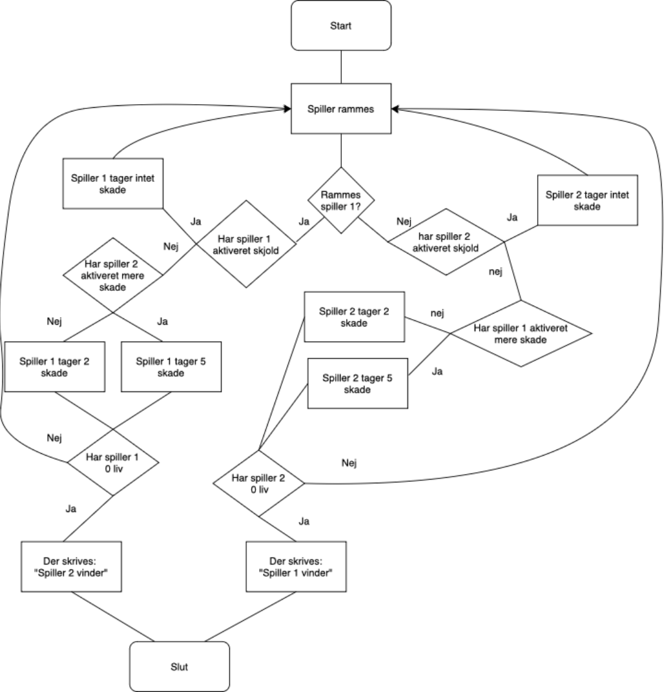

Spil og Leg
I "spil, leg og samarbejde" forløbet har vi arbejdet på at skabe et computerspil fra bunden, som dog ikke må kunne styres med kun en computer. Derfor har vi også arbejdet med en "Makey Makey": et praktisk interface der kommunikerer med computeren på samme måde som et keyboard, men hvor den ved hjælp af svage elektriske kredsløb kan skabe inputs fra stort set hvad som helst. Derudover har vi programmeret selve spillet i sproget python.
I billedet til venstre, ses problemet med at sværdet ikke er stabilt nok, dette fik vi dog fikset nogenlunde til vores visning af spillet. Her havde vi gjort sværdene mere stabile ved brug af mere papir. Vi prøvede også at lave sværd med en hård kerne, men dette gjorde at man slog for hårdt.
Det sidste if loop tegner en rektangel som viser cooldownet på special abilityen, dette gør den ved at trække en brøkdel af forskellen mellem t1 og t2 fra længden af en rektangel, og dette bliver den så ved med indtil at cooldownet på special abilityen så er udløbet, og dermed er klar til at blive aktiveret igen.
